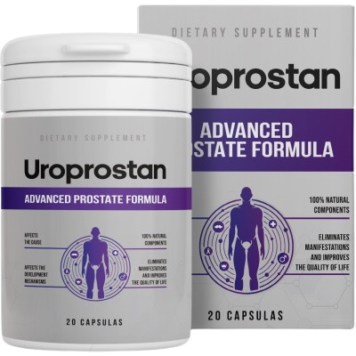

Supporto Naturale per il Benessere Maschile e la Funzionalità Prostatica
Uroprostan è l'integratore alimentare (Formula Avanzata) studiato con componenti 100% naturali per favorire la qualità della vita degli uomini.
Sconto del 50% applicato!
78,00 EUR
39,00 EUR
Prenota Ora il Tuo Sconto
78,00 EUR
39,00 EUR

Il 92% degli uomini affronta fastidi legati all'età. Ne riconosci qualcuno?
Non ignorare i segnali del tuo corpo. Se hai notato almeno 1 o 2 di questi sintomi, è il momento di supportare il tuo organismo:
- Senti leggeri fastidi o tensioni nella zona inguinale.
- Avverti formicolio o pressione nel perineo.
- Hai notato che vai in bagno molto più spesso, specialmente di notte.
- L'erezione è diventata più debole o incostante.
- Avverti un calo fisiologico della libido.
- Hai difficoltà iniziali durante la minzione o sensazione di svuotamento incompleto.
Trascurare il benessere intimo può influire gravemente sulla qualità della tua vita e sulla tua serenità di coppia!
Uroprostan: Un Aiuto Sicuro per il Tuo Equilibrio
- Azione Lenitiva: Aiuta a ridurre le sensazioni di tensione e fastidio locale.
- Migliora la Minzione: Favorisce un flusso normale e riduce i viaggi notturni in bagno.
- Supporta le Funzioni Maschili: Contribuisce a mantenere una sana circolazione sanguigna, utile per la funzionalità erettile.
- Ripristina il Desiderio: Un corpo in equilibrio favorisce il ritorno di una normale libido.
- 100% Naturale: Ingredienti selezionati per la massima tollerabilità.

Come Assumere Uroprostan?
💊
1 Capsula
Da assumere 3 volte al giorno
🍽️
Prima dei Pasti
Per massimizzare l'assorbimento
📅
Trattamento Continuo
Consigliato per risultati duraturi
Consegna e Pagamento: Facile e Sicuro
- 📝 Modulo d'ordine: Inserisci i tuoi dati nel modulo sul sito ufficiale.
- 📞 Chiamata: Un nostro specialista ti contatterà per confermare i dettagli.
- 📦 Spedizione: Invio del prodotto in pacco anonimo per la tua privacy.
- 💶 Ricezione: Pagamento comodo e sicuro al momento della consegna (da 3 a 10 giorni). Nessun anticipo richiesto!
Prezzo Speciale Oggi:
Solo 39 EURInvece di 78 EUR